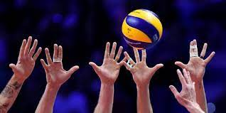

O voleibol é um esporte dinâmico e envolvente, praticado por milhões de pessoas em todo o mundo. Criado em 1895 por William G. Morgan nos Estados Unidos, o voleibol foi pensado como uma alternativa menos agressiva ao basquete. Com o tempo, o esporte evoluiu, ganhou regras oficiais e se tornou uma das modalidades mais populares, tanto em quadras quanto nas praias.
O voleibol é disputado entre duas equipes com seis jogadores em cada lado da quadra. O objetivo é fazer a bola tocar o chão do lado adversário, utilizando apenas os braços e as mãos. Cada equipe pode tocar na bola até três vezes antes de enviá-la para o outro lado. O jogo é dividido em sets, e vence quem conquistar três sets primeiro (em partidas de cinco).
A versão de praia, chamada vôlei de praia, é jogada com duas pessoas por equipe e tem regras adaptadas para o ambiente externo.
O voleibol exige:
1. Agilidade: para se mover rapidamente e reagir aos ataques.
2. Coordenação motora: essencial para executar passes, saques e bloqueios.
3. Trabalho em equipe: cada ponto depende da colaboração entre os jogadores.
4. Concentração e estratégia: saber posicionar-se e antecipar jogadas é fundamental.
Além de ser uma atividade física completa, o voleibol promove valores como respeito, cooperação e disciplina. É um esporte que pode ser praticado por pessoas de todas as idades, em ambientes escolares, recreativos ou profissionais.
No Brasil, o voleibol tem grande destaque internacional, com conquistas importantes em competições como os Jogos Olímpicos e os Campeonatos Mundiais. Atletas como Giba, Sheilla, Serginho e Fernanda Garay são ídolos que inspiram novas gerações.